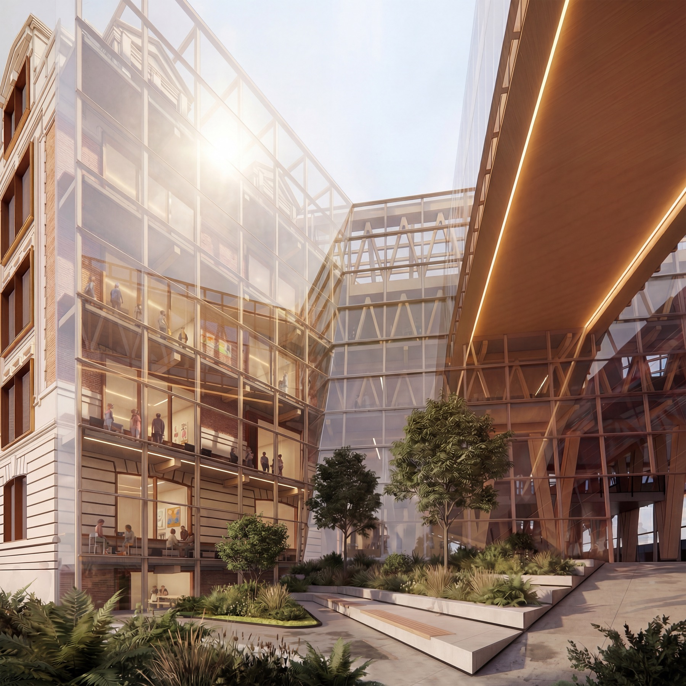
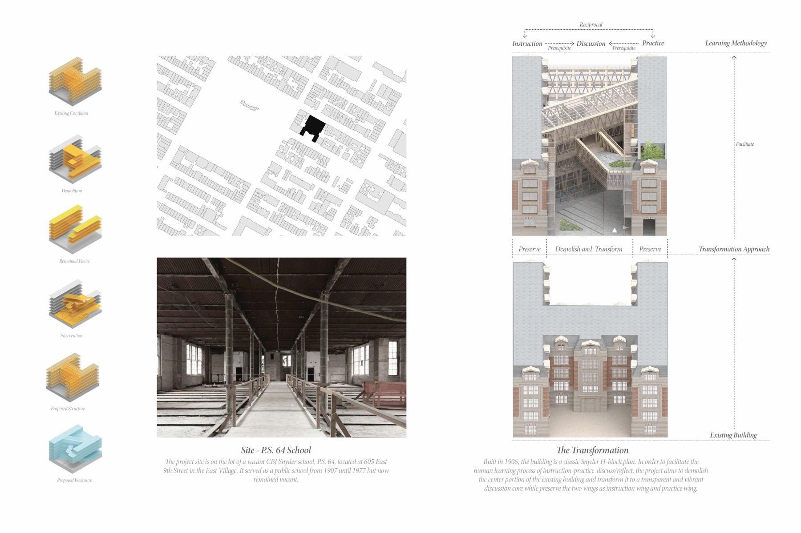
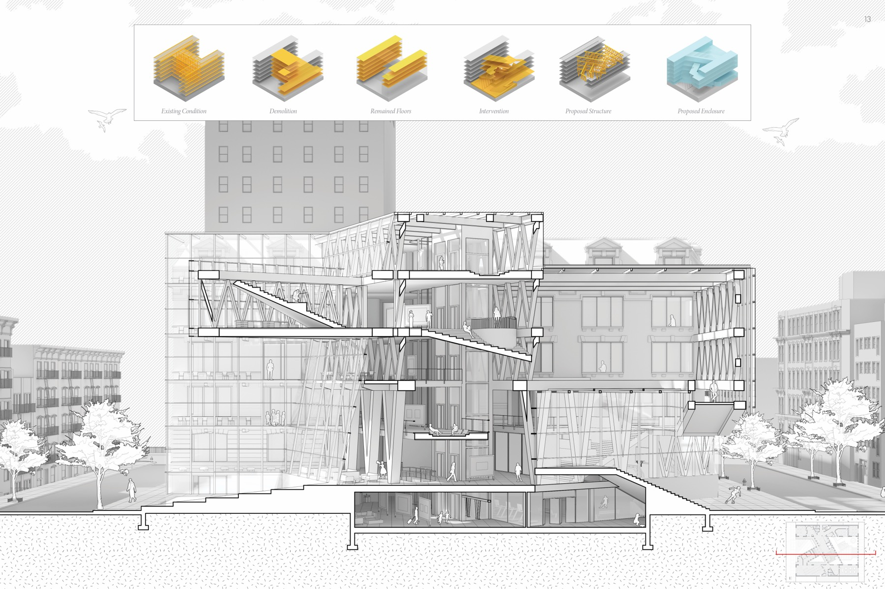
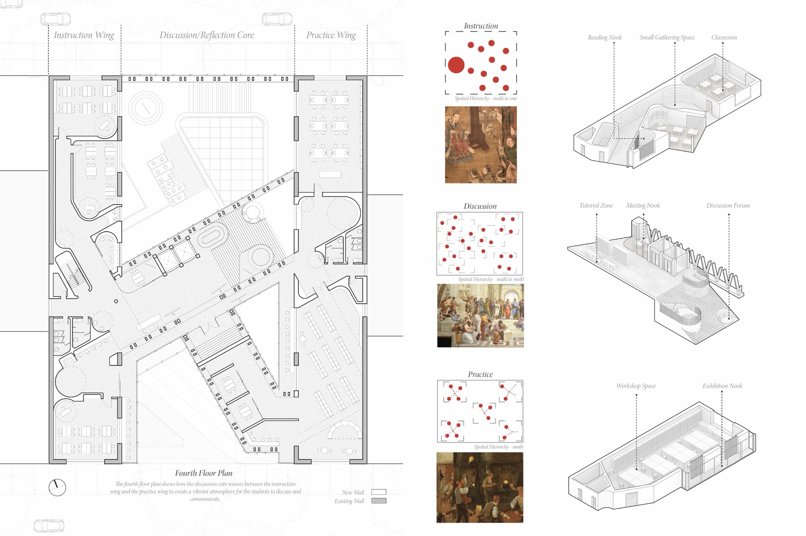
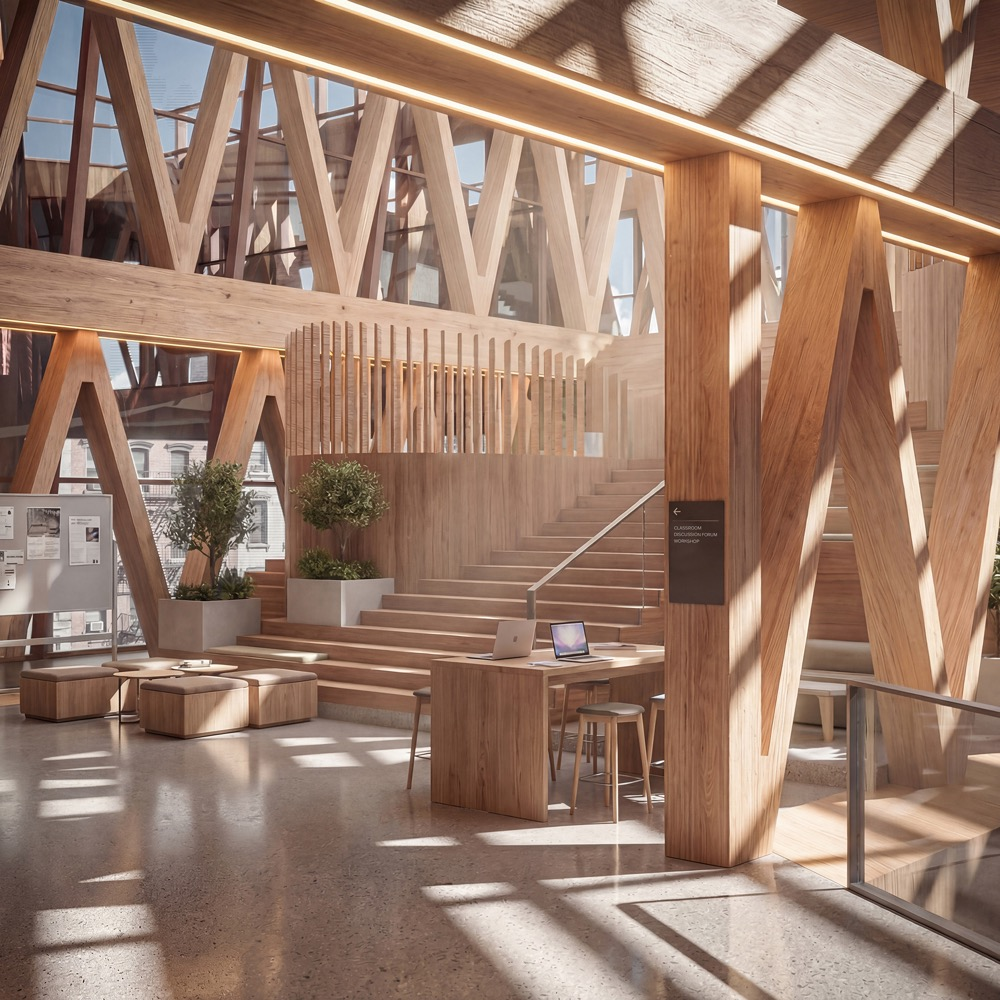
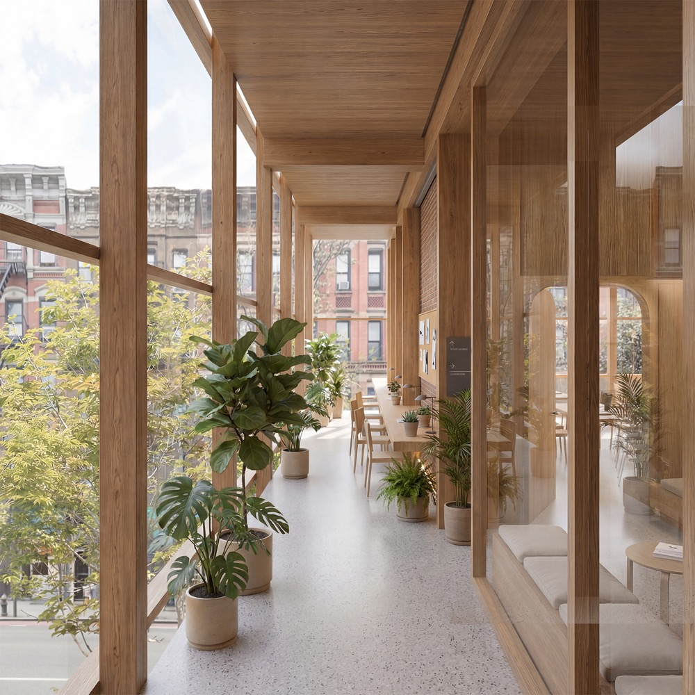
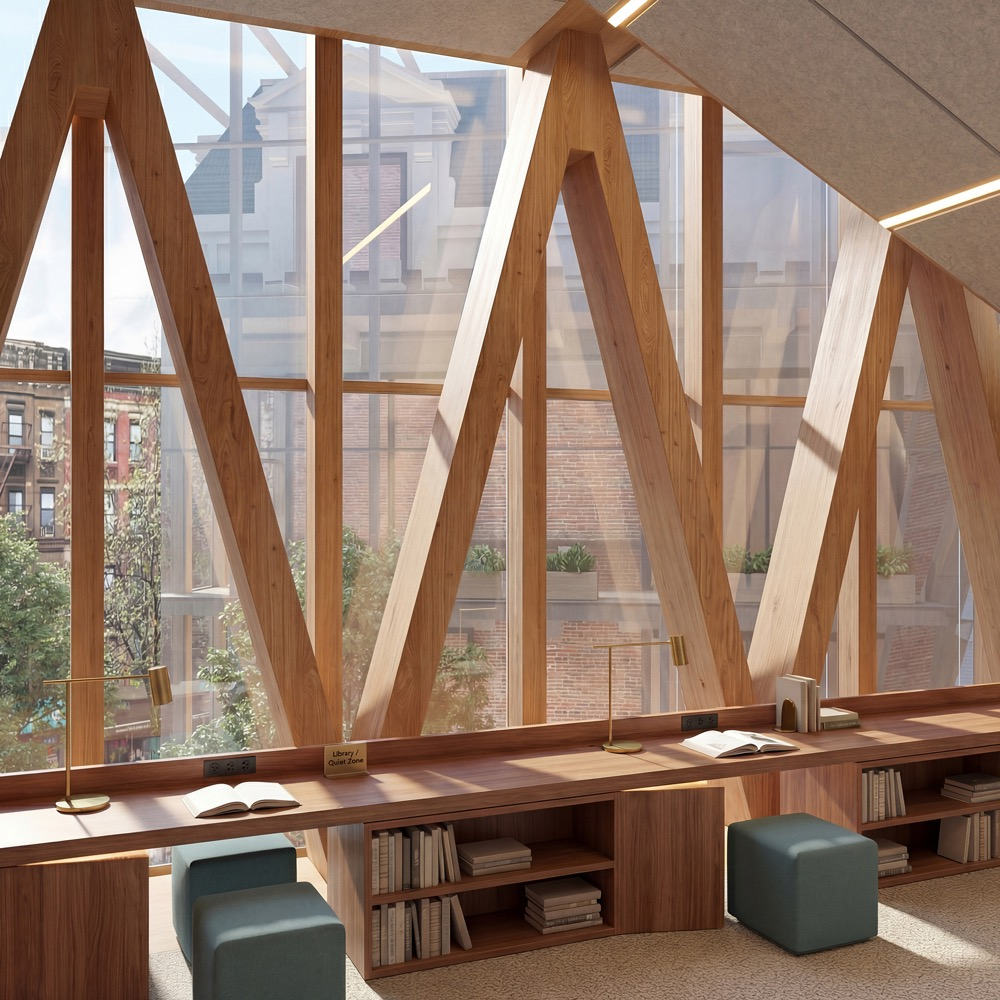
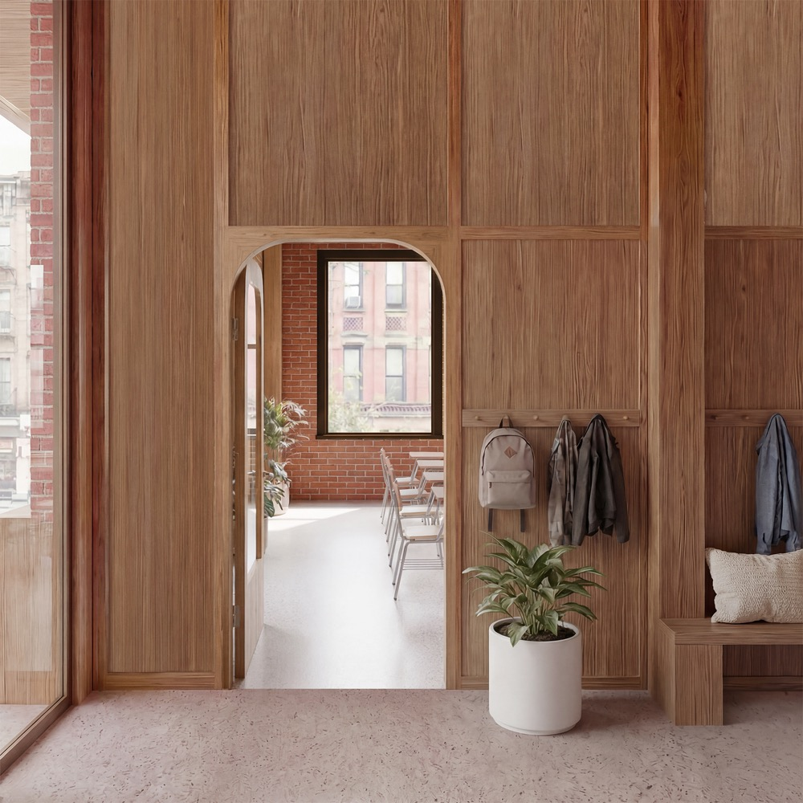

The Weave
An adaptive reuse project transforming an industrial building into an experimental school focused on learning through making.
Program
School
Type
Adaptive Reuse
Year
2020
Instructor
Daisy Ames
The Weave reimagines education as a process of discovery through making. Housed in a converted industrial building, the school organizes learning around workshops, studios, and shared production spaces rather than traditional classrooms.

The existing industrial structure is transformed through a series of precise insertions—a new timber framework that threads through the building, carving open courtyards and creating layered indoor-outdoor spaces. This courtyard becomes the social heart of the school, visible from all levels.

The adaptive reuse strategy preserves the industrial character of the existing structure—exposed steel, concrete floors, generous ceiling heights—while inserting new elements that support the school's pedagogical approach. Mezzanines, catwalks, and movable partitions allow spaces to be reconfigured as projects evolve.

The section reveals how different scales of making are accommodated vertically: heavy workshop equipment on the ground floor, lighter studios and seminar rooms above, and a rooftop greenhouse for material experiments. A continuous stair and ramp system encourages movement and chance encounters between disciplines.





New insertions are detailed to read as distinct from the existing structure—lighter, more refined, clearly contemporary. This dialogue between old and new reinforces the school's philosophy: that making something new requires understanding what came before.